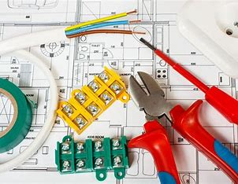

الهندسة الصناعية تهتم بتحسين العمليات والأنظمة الإنتاجية لتحقيق الكفاءة والجودة في مختلف القطاعات.
الهندسة الصناعية
الهندسة الكهربائية
الهندسة الكهربائية تهتم بتصميم وتحليل الأنظمة الكهربائية والإلكترونية مثل الشبكات وأنظمة الطاقة.
الهندسة المدنية
الهندسة المدنية تركز على تصميم وتنفيذ المشاريع الإنشائية مثل المباني، الجسور، والطرق.
هندسة الاتصالات
هندسة الاتصالات تهدف إلى تطوير وتحسين أنظمة الاتصال السلكية واللاسلكية لضمان نقل البيانات بشكل فعال.